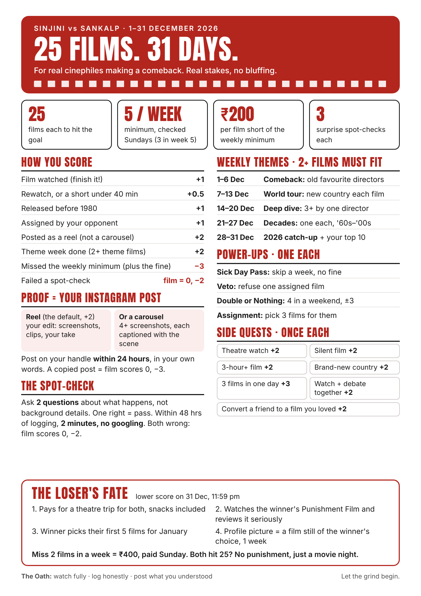

Weekly check
The pot
Violations
Bonuses and spot-checks
Film log
To remove a film, close its issue on GitHub. Only open issues count.
How to
Everything you might need, step by step. Tap a question to open it.
Getting started
Make a GitHub account
- Go to github.com/signup.
- Enter your email, a password and a username, then verify your email.
- The free plan is all you need. Note your username: it's how the site knows it's you.
Get your account added to the challenge
- Send your GitHub username to Sinjini.
- She adds it to the site.
- Check the scoreboard on the Tracker tab: your username appears under your name. Until it does, your entries won't count.
Find your GitHub username
- Sign in at github.com.
- Tap your profile picture (top right).
- Your username is the bold name at the top of the menu, also shown in your profile link: github.com/username.
Before 1 December: the kickoff checklist
- Read the Rulebook and agree in the chat.
- Declare your Week 3 director in the chat.
- Send your opponent their 3 assigned films in the chat.
- Make sure your GitHub username shows on the scoreboard.
- Pick your first film for 1 December.
Logging films
Log a film
- Post on Instagram first, within 24 hours of watching. Copy the post's link (see Instagram posts).
- Tap “+ Log a film” on the Tracker tab. A form opens on GitHub. Sign in if asked, with your challenge account.
- Fill in the form:
- Movie and Year of release
- Watched on: pick the date from the list
- Instagram post link: paste your link
- Post type: Reel (+2) or Carousel
- Extra proof: optional. Drag in photos or add a note.
- Extras: tick any that apply
- Tap “Submit new issue” at the bottom.
- Come back and tap “Refresh”. The film shows in the log with its points.
Which “Extras” boxes to tick
- Rewatch: you'd seen it before. Counts as half a film.
- Short under 40 min: counts as half a film.
- Assigned by my opponent: it's one of the 3 films they gave you. +1.
- Fits this week's theme: 2 of these in a week earns +2. Check the theme in the Rulebook.
Pre-1980 films get +1 automatically from the year you enter.
Fix a mistake in a film you logged
- In the Film log, tap the film's #number. It opens on GitHub.
- Tap the … menu on your entry, then Edit.
- Change the text after the heading you need (keep the
###headings as they are), then Update comment. - Tap Refresh on the site.
Remove a film (logged by mistake, or a test)
- Tap the film's #number in the Film log.
- Scroll down and tap Close issue. Only open entries count.
- Changed your mind? Open it again with Reopen issue.
Log a film watched over two sittings
Log it once, after you finish. Pick the date you finished. Both sittings must be within 48 hours.
Log a film you watched together
Each of you logs it separately, with your own Instagram post. Pick “Watched together” in your extra proof note. It can't be spot-checked. If you debated it on a call, also claim the “Watched + debated together” side quest.
Instagram posts
Make a reel
- During the film, take screenshots or short clips of scenes you want to use.
- In Instagram, tap + then Reel, and pick your screenshots and clips.
- Add your take: text on screen, a voiceover or captions in your own words.
- Share it to your profile. A reel earns +2.
Make a carousel instead
- Pick at least 4 screenshots from across the film: start, middle and end.
- In Instagram, tap + then Post, and select several images.
- In the caption, describe what's happening in each image, numbered 1, 2, 3, 4…
- Share it. A carousel counts, but without the +2.
Copy your post's link
- Open the post on Instagram.
- Tap the share (paper plane) icon or the … menu.
- Tap Copy link, then paste it into the form.
What not to do
- Don't copy someone else's reel, review or captions: the film scores 0 and you lose 3 more points.
- Don't delete the post before 31 December: your opponent may check it.
- Don't post spoilers for a film on your opponent's assigned list.
Bonuses & power-ups
Claim a side quest
- Tap “Claim a bonus” on the Tracker tab.
- Pick the side quest, add proof or a note, and submit.
- Each side quest counts once. Its points show under your name in “Bonuses and spot-checks”.
Use your Sick Day Pass
- Before Sunday midnight of the week you'll miss, tap “Claim a bonus”.
- Pick Power-up: Sick Day Pass and choose the week.
- Submit and tell your opponent. That week's fine and −3 are cancelled. You only get one.
Play Double or Nothing
- Before a weekend, announce in the chat: “Double or Nothing: 4 films by Sunday.”
- On Sunday night, tap “Claim a bonus”.
- Pick won (+3) if you watched 4, or lost (−3) if you didn't. Be honest: your log shows it anyway.
Assign films, and use your Veto
- Send your opponent 3 films in the chat before 1 December. Choose wisely.
- When they watch one, they tick Assigned by my opponent when logging it (+1).
- To veto one, say so in the chat. Your opponent then sends a replacement. One veto each.
Spot-checks
Run a spot-check
- Pick a film your opponent logged in the last 48 hours that you know well.
- In the chat, ask two questions about what happens (not background details). They have 2 minutes, no googling.
- One right, or roughly right, is a pass.
Record the result
- Note the film's #number from the Film log.
- Tap “Report a spot-check”, enter the number, pick Failed or Passed, and write your two questions.
- Submit and Refresh. A fail shows on their film: it scores 0 and costs them 2 more points. Each player's first 3 reports count.
If you're spot-checked
Answer in the chat within 2 minutes. Describe what happens in your own words; exact details aren't needed. If you think the questions broke the rules (background details, older than 48 hours), say so in the chat before they file it.
Reading the scores
What the scorecard numbers mean
- Films of 25: your film count. Rewatches and shorts add half.
- Final score: film points + bonuses − 3 for each missed week. Highest on 31 Dec wins.
- Film points: points from your films alone.
- Bonuses: theme weeks, side quests and Double or Nothing.
- Still to pay: fines you haven't paid yet. The pot section shows each week.
- LEADING: who's ahead on score (ties go to more films).
What the weekly check means
- Upcoming: the week hasn't started.
- In progress: the week is on; keep watching.
- Done: you met the minimum.
- Missed · ₹amount: you fell short; that's your fine for the week.
- Sick Day Pass: missed, but covered.
- Theme done +2: 2 or more theme films that week.
See only one player's films
Above the Film log, tap Sinjini or Sankalp. Tap Everyone to see both again.
Fines, the pot & violations
How fines are worked out
Each week ends Sunday at midnight. For every film you're short of the minimum (5, or 3 in week 5), you owe ₹200. Half films count, so 4.5 of 5 costs ₹100. The site works it out on its own.
Pay your fine
- On Monday, check The pot on the Tracker: it shows each week's fine and the deadline, the Tuesday after the week, 11:59 pm.
- Pay the amount by UPI to whoever holds the pot, and take a screenshot showing the amount, date and transaction ID.
- Tap “Pay the pot”, pick the week, enter the amount, drag in your screenshot and submit.
- Tap Refresh. Your week turns Paid, with a link to your screenshot.
Raise a violation
- Tap “Raise a violation” on the Tracker.
- Pick the type:
- Unpaid or late fine: pick the week. If your opponent hasn't paid it by the Tuesday deadline, their fine for that week doubles.
- Copied Instagram post: enter their film's #number and paste the link to the original. The film scores 0 and they lose 3 points.
- Other rule break: describe it, then settle it in the chat.
- Add your evidence and submit. Violations show under The pot on the Tracker.
Only violations against your opponent count. Raised by mistake? Close the issue.
What happens on 31 December
- Final scores lock at 11:59 pm.
- The lower score is the loser and faces the loser's fate (see the Rulebook).
- If you both hit 25 films, nobody's punished and the pot pays for a movie night.
On your phone
Add the site to your home screen
- iPhone (Safari): open the site, tap the share icon, then Add to Home Screen.
- Android (Chrome): open the site, tap ⋮, then Add to Home screen.
Log from your phone
The forms work in your phone's browser. Make sure you're signed in to github.com there with your challenge account. If the GitHub app opens instead, that works too.
Download the pamphlet
Open the Pamphlet tab and tap Download PDF or Download image. The image is easiest to share on WhatsApp.
Troubleshooting
My film isn't showing
- Tap Refresh.
- Check you submitted from your challenge account. Entries from other accounts are ignored (the site says how many).
- Check the issue is still open, not closed.
- Check the date is in December 2026.
The points look wrong
- Open the film's #number and check the year, post type and Extras ticks.
- Edit the entry if something's off, then Refresh.
- Check whether a failed spot-check is marked on it.
“GitHub is limiting requests”
GitHub allows a limited number of updates per hour from one network. Wait a few minutes and tap Refresh. Your entries are safe; only the display is paused.
The “Log a film” button asks me to sign in
Sign in to GitHub with your challenge account, then tap the button again.
The Rulebook
The Cinephile's Oath
This challenge is for real cinephiles making a comeback to the thing they love: watching good films properly. It runs on loyalty, to the films and to each other.
- I watch every film fully and with attention, never on 2x, never half-scrolling my phone.
- I only log what I truly watched. A faked film cheats nobody but me.
- I show I understood the film by making something from it on my page.
- I play to win, but I'm here for the cinema.
Why we're doing this
We are cinephiles who stopped watching films. This month we fix that: 31 days, 25 films each, real money on the line, and zero tolerance for bluffing.
- Get the habit back. Watching films should feel normal again, not like homework we keep postponing.
- Feed the page. Every film is a possible post. More watching means more to say.
- Become interesting again. Have opinions, hot takes and deep cuts ready for every conversation.
The basics
| Rule | Detail |
|---|---|
| Dates | Tue 1 Dec to Thu 31 Dec 2026, midnight IST |
| Players | Sinjini vs Sankalp |
| Monthly goal | 25 films each (about 6 a week) |
| Weekly minimum | 5 films, checked every Sunday at midnight. Week 5 (28 to 31 Dec) needs only 3 |
| Tracker | Log every film with the “Log a film” button. It opens a GitHub form; this site does all the counting |
| Winner | Highest final score on 31 Dec at 11:59 pm |
What counts as a film
| Type | Counts as |
|---|---|
| First-time watch of a feature film (40+ min) | 1 film |
| Rewatch | ½ film |
| Short film under 40 min | ½ film |
| Documentary or animated feature | 1 film |
| A TV episode, YouTube video essay or trailer | Nothing |
| A film watched in two sittings | 1 film, if both sittings fall within 48 hours |
| At 2x speed, or mostly scrolled through on your phone | Nothing, and your opponent may call it out |
Golden rule: you must finish the film. A walk-out doesn't count.
Weekly themes
At least 2 films each week must fit that week's theme. The rest are free picks.
| Dates | Theme | The rule |
|---|---|---|
| 1–6 Dec | The Comeback | Directors you used to love but stopped following |
| 7–13 Dec | World Tour | Non-English films, a different country each time |
| 14–20 Dec | Director Deep Dive | 3+ films by one director you've never properly explored. Declare them before 1 Dec |
| 21–27 Dec | Decades Run | One film each from the '60s, '70s, '80s, '90s and '00s |
| 28–31 Dec | 2026 Catch-up | This year's releases you missed. End by posting your top 10 of 2026 |
Points
The film count decides who hit 25. Points decide who wins the month.
| What you did | Points |
|---|---|
| Watched a film | +1 |
| Rewatch or short | +0.5 |
| Film released before 1980 | +1 bonus |
| Watched a film your opponent assigned you | +1 bonus |
| Posted it as a reel (rather than a carousel) | +2 bonus |
| Completed the week's theme (2+ theme films) | +2 per week |
| Side quest completed | as listed |
| Missed the weekly minimum | −3 |
| Failed a spot-check | film scores 0, and −2 |
Example: a 1962 Japanese film your opponent assigned, posted as a reel = 1 + 1 + 1 + 2 = 5 points.
Proof: the Instagram post
A film only counts once you've posted about it on your Instagram handle, within 24 hours of watching. Collecting the moments and explaining them is how you show you watched and understood it. Put the post's link in the "Log a film" form.
| Post type | What it must have | Points |
|---|---|---|
| Reel (the default) | Your own edit of the film: screenshots, clips and your take on it | Counts, +2 bonus |
| Carousel (if you can't make a reel) | At least 4 screenshots from across the film, each captioned with what's happening in that scene | Counts |
Captions and voiceovers are in your own words. A post copied from someone else's reel or review means the film scores 0, and you lose 3 more points.
Spot-checks. Each player gets 3 for the month. They catch bluffing without punishing an honest viewer's memory:
- Ask about what happens (“What happens right after the dinner argument?”), not background details, colours or exact lines.
- Ask two questions. One right is a pass. Roughly right counts.
- Only within 48 hours of the film being logged, with 2 minutes to answer and no googling.
- You must know the answer yourself: you've seen the film, or you can show the scene.
- Both wrong: the film scores 0 and they lose 2 more points. File it with the “Report a spot-check” button.
- You can't spot-check a film you watched together.
Stakes and punishments
The pot. Every film you are short of the weekly minimum costs ₹200, paid into a shared pot every Sunday night. Watch 3 of 5 and you pay ₹400 that week. Skip the whole month and you pay ₹4,600. A rewatch or short counts as half a film, so it saves ₹100. Pay by the Tuesday after the week ends (11:59 pm), and record it with the “Pay the pot” form and your screenshot. If it's still unpaid after that, your opponent can raise a violation and that week's fine doubles. A missed week also costs 3 points.
The final loser (lower score on 31 Dec):
- Pays for a theatre outing for both of you, popcorn and drinks included. The pot covers part of it first.
- Watches the Punishment Film. The winner picks one notoriously bad or painfully long film. The loser watches all of it and posts a serious, full-length review, no sarcasm allowed.
- Gives up January. The winner chooses the loser's first 5 films of the next challenge.
- Changes their profile picture to a film still the winner chooses, for one week.
If you both hit 25 films, nobody is punished. The pot pays for a celebration movie night. The points winner still picks the film.
Tie on points: more films wins. Still tied? A 10-question film trivia quiz written by someone neutral.
Power-ups and side quests
| Power-up (one each) | What it does |
|---|---|
| Sick Day Pass | Skip one weekly minimum with no fine and no points penalty. Declare it before Sunday midnight |
| The Assignment | Your 3 assigned films are your weapon: pick long ones, old ones, or ones they've been avoiding |
| Veto | Reject one film your opponent assigns you, once. They must assign another |
| Double or Nothing | Before a weekend, declare you'll watch 4 films by Sunday. Do it: +3. Fail: −3 |
| Side quest (once each) | Bonus |
|---|---|
| Watch a film in a theatre | +2 |
| Watch a silent film | +2 |
| Watch a film over 3 hours long | +2 |
| A film from a country neither of you has seen a film from | +2 |
| Marathon: 3 films in one day | +3 |
| Watch one film together and debate it on a call | +2 each |
| Convince someone outside the challenge to watch a film you loved | +2 |
Kickoff checklist and fair play
- Both players read this rulebook and agree in the chat (a thumbs-up counts as signing)
- Declare your Week 3 director
- Assign your opponent their 3 films
- Both players have a GitHub account, and their usernames are in the site settings
- Pick the first film for 1 Dec
Fair play: no spoilers for films on the other's list. Settle disputes by talking first; the logger gets the benefit of the doubt once a month. Trash talk is encouraged, being mean is not. Rules change only if both agree, and never in the last week.
LET THE GRIND BEGIN.
The Pamphlet

Everything on one A4 page. Print it, pin it, or keep it on your phone.
Download PDF Download image (PNG)